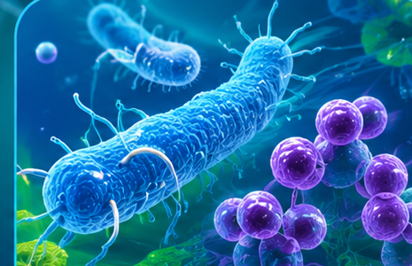
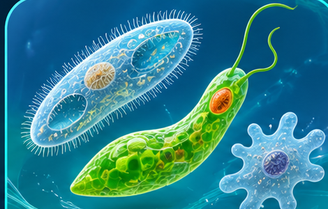
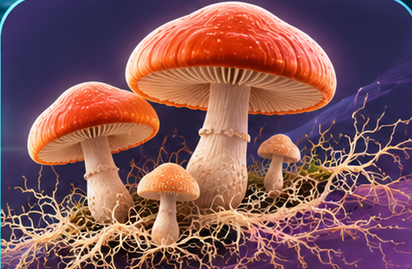

اكتشف أجزاء الكائنات الحية
اختر المجموعة، ثم اضغط على الأجزاء لتتعرف إلى أسمائها ووظائفها.


البكتيريا والأثريات — الخلية البكتيرية

الطلائعيات

اختر الكائن الذي تريد استكشافه
يتضمن الدرس أمثلة مثل الأميبا والبراميسيوم واليوغلينا والبالزموديوم والليشمانيا والدياتومات. اختر أحدها للانتقال إلى نموذج أجزائه.
الفطريات

اختر نموذج الفطر
يعرض الدرس أمثلة منها الخميرة والمشروم والكمأ وعفن الخبز، ويتناول الخيوط الفطرية والغزل الفطري والحواجز الخلوية.